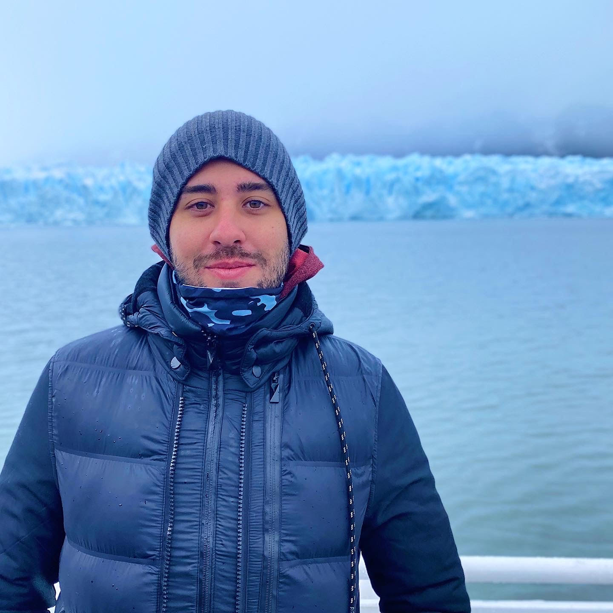
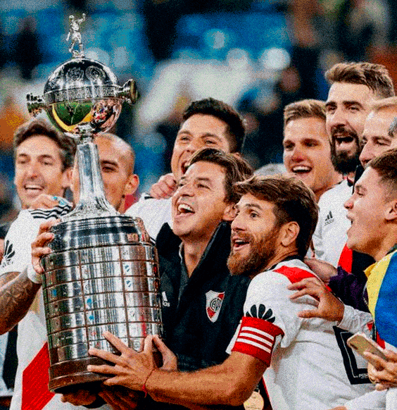

Sobre Mí
- Nombre: Federico Briozzo
- País: Argentina
- Edad: 28 Años
- Profesión: Comerciante
- Habilidades: Photoshop / Illustrator / Figma
- Idiomas: Español / Inglés
- Estudios: Desarrollo UX/UI (Coderhouse)
- Hobbies: Diseño gráfico / Cine / Amigos
- Ciudad favorita: Nueva York
- Comida favorita: Asado


- Deporte favorito: Fútbol
- Hincha de: River Plate
- Mejor estadio: Estadio Monumental
- Mejor jugador del mundo: Lionel Messi
- Mejor recuerdo deportivo 1: River Copa Libertadores 2018
- Mejor recuerdo deportivo 2: Argentina Qatar 2022
- Música favorita: Rock / Rap / Indie
- Artista/Banda favorita: Arctic Monkeys / Foo Fighters
- Banda recomendada: Royal Blood / Bad Omens
- Canción recomendada: Bad Nerves - Baby Drummer